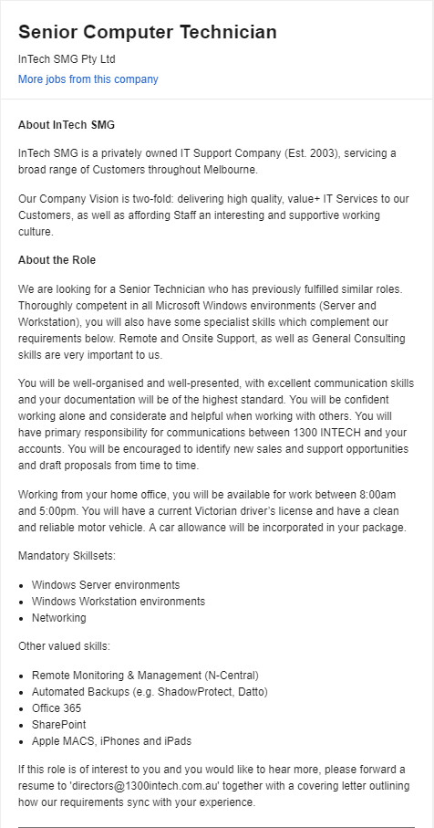
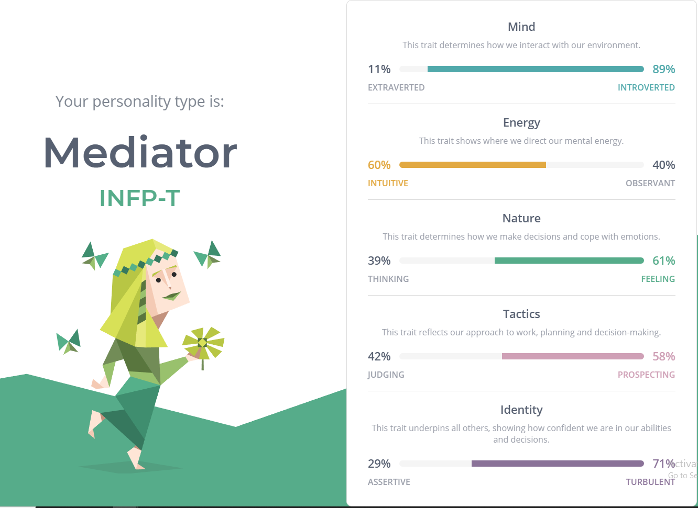
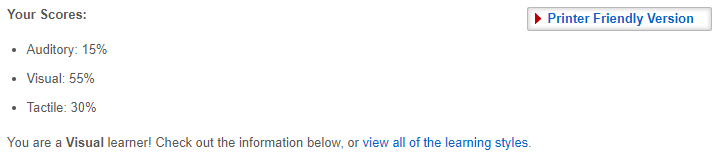
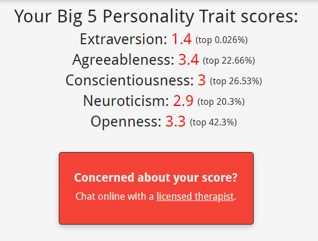

Personal Information
Bilal Mohamed Aboobucker.
s3719179@student.rmit.edu.au
I’m currently studying my first semester of the Bachelor of Technology (Computing Systems), after moving from the Associate Degree of Engineering Technology after one and a half years. I’m a first generation Sri-Lankan Australian and was born and raised in Australia. I can speak Tamil, although not very well. I don’t have many hobbies although I have clocked in a lot of hours into various games such as League of Legends and CS:GO and have watched Anime and Japanese T.V. shows to the point where I can speak Japanese semi-fluently. I enjoy science and technology and have been fascinated by the field since as far as I can remember. As a child I would force my Dad to buy me a new science experiment every few weeks and now I enjoy fiddling with computers and the latest gadgets.Interest in IT
I have had a deep interest in IT ever since childhood, when I would watch my Dad fix computers in the living room. I remember watching him intently, constantly asking him for the play-by-play of what he was doing. This experience birthed in me a love for all things science and technology. From my first email address to my first phone I was always blown away with the new piece of technology I got to play with. Due to this childhood experience, I was always fairly well versed with IT and was always the IT guy that would fix things in the house or at school. I do enjoy the hardware side of tech a little bit more than the software side and thus am always updated on the new PC hardware or gadget that comes out. RMIT seemed like a good choice because it had a good reputation for being a good university to study IT and was located in the CBD, fairly close to my house. I had heard that RMIT University was your best bet if you wanted to study engineering or computer science/IT as it had a good reputation for delivering high quality programs in these fields. As a lot of my school friends also had an interest in STEM fields and wanted to study at RMIT, my decision to apply for a program at RMIT was settled. During my studies I would like to be given the tools to further my curiosity in the field of IT. I would like to learn how to program, so that I may have a better understanding of the programs I use everyday and so that I may be able to possibly leave my mark in the world of IT. Having a skill set that is desirable to employers is always nice but ideally, I would graduate with a skillset that would allow me to work independently from home, or would allow me to establish a start-up company. Such qualifications might include; business management, entrepreneurship or marketing.
Ideal Job
The role “Senior Computer Technician” is an IT support position that supports clients with any IT related problems and assists small businesses develop their IT networks. The position is appealing to me because it allows the employee to work from home. Personally, I prefer being able to work from home and have more flexibility in terms of deadlines. I believe having the freedom to get work done at my own pace and being able to take a break when I want is what will give me contentment in my work. As it is a senior position, the employee will need a few years of experience in the field and must have experience in Windows Server and Workstation environments. It is a fairly client-facing role so that employee will need to have good communication and people skills, be well presented and must be able to do their work with a high degree of organisation. As a first year university student, I have yet to achieve most of the requirements of the job. My current skills are limited to a small understanding of common problems in Windows programs and networks and how to fix them and no previous work experience in the field. My communication and people skills are decent due to being involved in an extra-curricular youth groups and programs, although I’m sure I would need some more exposure in the field to understand what my full requirements are in terms of communication skills. To achieve my needed skills I would try to find a part-time job related to the field or find internship positions at similar companies. After I complete my degree ideally I would land a job in the field, work for 3-5 years attaining the required skills and then move up to the “Senior Computer Technician” role.
Personal Profile
  The results of the Myers-Briggs and the Big 5 Personality tests show me that I’m quite introverted, which is quite a common trait among those studying Computer Science/IT. The reason for this trend is still unknown to me, but it could be due to the fact that most people interested in IT have done an unhealthy amount of gaming during their childhoods, sacrificing a lot of face-to-face social interaction with friends. The learning style test shows that I’m a visual learner which I certainly agree with as I find myself losing concentration and daydreaming while reading textbooks. On the other hand, I’ll easily pick up a concept or topic if someone explains or physically shows me how something works. The INFP-T personality type indicates that I prefer listening over speaking and that I can pick up on little details missed by other people. This trait will allow me to be a problem solver in the workplace. When problems or conflicts arise between work colleagues or between clients and the company, as a Mediator personality type I’ll be able to solve the problem by listening and empathizing with both sides of the argument. I would always be just and fair in my decision making and be able to effectively communicate to both parties the other person's perspective and ideally help them come to a conclusion that both sides are happy with. When forming a team, I’d choose to be with people who have big ideas and big personalities. Usually, more than one person with a big personality in a team would lead to constant conflicts as these people are usually forthright and inconsiderate of other people’s opinions and feelings. The addition of a Mediator in such a composition will allow for a team that produces lots of brilliant ideas and works effectively and efficiently with each other, while keeping the amount of internal conflicts to a minimum.
Project idea - Flashcard App
My idea for a project would essentially be a mobile app that consumers can use as a memorization tool for any topic that they would like. Much like physical flashcards, users will input a keyword on one side of the card, and the definition, explanation or diagram of the keyword on the other side of the card. But unlike physical flashcards, users will have access to a number of extra features such as; voice recordings, notes, hyperlinks to further online reading and options to test knowledge.
I wanted to create this app as flashcards are a useful and effective tool in memorising and learning topics. With the use of I.T., I’ll be able to further improve and optimise the effectiveness of the tool and hopefully help a lot of students with their studies. Flashcards have personally helped me and I have thought that an app like this would make studying easier. When learning Japanese, a flashcard app helped me alot and I thought it would be useful if I had something similar for every subject I took. From there I thought an app where you could make your own flashcards, one for each subject or topic, would be useful to almost every student in the world.
The primary feature of the app would just be the function of physical flashcards. Users will have the option to create a new set of flashcards, naming it based on the subject or topic. Specific flashcards will be created by first inputting a keyword on one side of the flashcard and the definition or explanation on the other side. Users will have the option to embed pictures or diagrams into a flashcard from their phone storage. The card will flip when the user taps on it and will move to the next or previous flashcard if the user swipes left or right. Pinching the screen will allow the user to scroll to a specific flashcard they are looking for. As for features that would separate it from physical flashcards, users will have the option to embed hyperlinks into the definition side of the flashcard. This allows students to revise content that they are perhaps not too confident in or to complete some extra revision prior to a test or an exam. Users have the option to record their voice and basically use the app to create audio flashcards. Users have the option to input an audio recording instead of text in the definition side of the flashcard. This would appeal to all the Auditory learners looking for a flashcard app that suits their learning style. Each flashcard would also feature a button that opens up a notepad where students can note down any thoughts that come to mind when going through the process of using the flashcards. This feature would be used to note down for example, any common errors the students keeps repeating or the important key points of each flashcard. To further challenge the knowledge of the user, the app will have a test/exam feature. In this feature, students will be presented with a keyword and will have type up the definition with 95% accuracy to score a point. If the user answers accuracy for each of the flashcards in a group, they’ll receive a 100% grade for that topic. This feature will allow for the solidification of knowledge, firmly committing each of definitions to memory.
To build the app successfully I’ll need to know how to program both Apple and Android applications. I currently have zero experience in app building but I aim to use MIT App Inventor to help me build the app. As I am a beginner, I’ll need to rely heavily on online tutorials and online coding examples. Attaining the skills required to build this app will be relatively simple as the MIT App Inventor was created to make app building more accessible and easy.
If successful, the project will become a useful tool in a student’s toolbox, allowing them to achieve higher results in tests and exams. It will also give an option to Auditory learners who would like to use flashcards as a tool in their learning but don’t find it very helpful in its traditional state. I would hope that this app would give an option to those that need a useful memorisation tool in whatever topic they choose giving them confidence in their knowledge and thus hopefully reducing some of the stress that students go through during exam season.